Apps para aprender y jugar en familia
Somos MJCStudio, un pequeño estudio independiente de España. Hacemos apps cuidadas, sin anuncios y sin recoger datos, para pasar buenos ratos juntos y aprender sin darse cuenta.
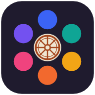
Rondalia
Momentos de calidad que caben en un móvil
Cualquier rato es bueno para jugar juntos: la sobremesa, un viaje en coche, la espera en un restaurante, una tarde de lluvia o una reunión con amigos. Saca el móvil y empieza la partida. Un solo móvil que se va pasando, sin internet, sin cuentas y sin que nadie tenga que leer instrucciones: abuelos, padres y peques juegan juntos, cada uno a su nivel.
Cuatro grupos de edad (5–7, 8–11, 12–15 y 16+). En la misma partida, el peque recibe su pregunta y el abuelo la suya.
Desde preguntas y mímica hasta el abecedario, banderas o palabra prohibida. Siempre hay uno que apetece.
Más de 2.000 preguntas por idioma, cientos de palabras y mímicas, y todo el contenido revisado para que sea apto para niños.
Preguntas, Abecedario, Cálculo, Banderas y Adivina el número sirven para practicar y aprender con un solo jugador.
La app lleva los puntos, los turnos y el tiempo, para que vosotros solo os preocupéis de reír.
Set de Halloween gratis: preguntas, palabras y mímicas, y un estilo visual con calderos de bruja, murciélagos y telarañas.
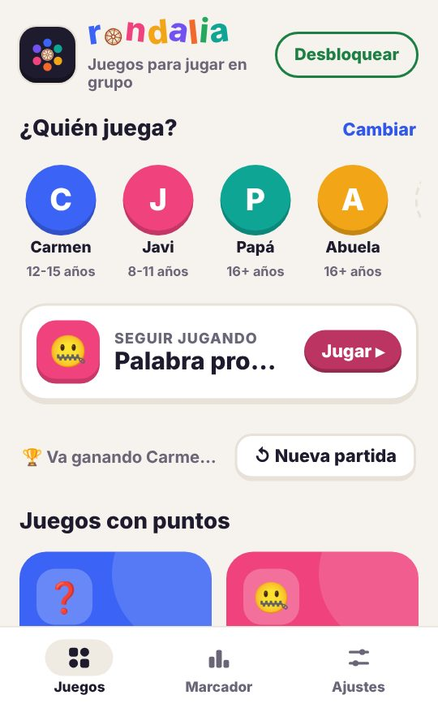
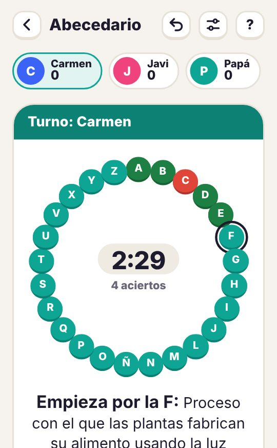
Los juegos
En español, inglés, francés y alemán, con preguntas adaptadas a cada país. Gratis para empezar; una única compra desbloquea todo, sin suscripciones.
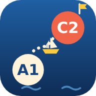
Lexpedition
Rumbo fijo: aprobar tu examen
Lexpedition convierte la preparación de tu examen oficial de idiomas en una travesía por el mar, y el puerto de destino es el aprobado. Cada lección es una isla que conquistar y cada expresión que dominas es una milla menos hasta la meta. Con cinco o diez minutos al día llegarás al examen con el vocabulario que más se resiste.
Prepara inglés, alemán, francés o español, del nivel A1 al C2 del Marco Común Europeo. Puedes estudiar varios a la vez.
Verbos con partícula o preposición (phrasal verbs, trennbare Verben…), expresiones idiomáticas y colocaciones, con frases de ejemplo reales.
Elige tu rumbo entre islas misteriosas, despeja la niebla y planta tu bandera. Asciende de Grumete a Almirante.
Tarjetas, elegir la partícula, completar huecos y unir parejas, con repetición espaciada para que no se olvide lo aprendido.
Test diario con nota, racha, meta de XP, misiones e insignias. Ideal para crear el hábito.
La app habla español, inglés, francés o alemán, y los significados pueden salir traducidos a tu idioma o como definición.
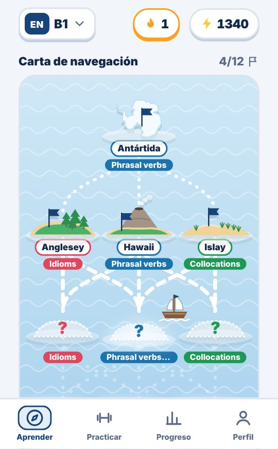
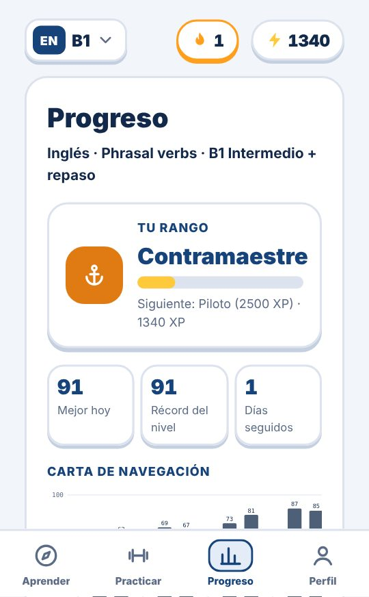
Para cualquier edad: desde niños que preparan su primer certificado hasta adultos. Varios perfiles en el mismo móvil. Gratis en todos los niveles: el Test diario y las 3 primeras islas de cada nivel; cada idioma completo se desbloquea con una compra única.
Nuestro compromiso
- Sin anuncios, nunca.
- Sin cuentas ni registro.
- No recogemos datos personales: todo se guarda en tu móvil.
- Aptas para menores: compras y enlaces protegidos con una pregunta para adultos.
- Compra única opcional, sin suscripciones.
¿Dudas o ideas? Escríbenos a soporte@mjcstudio.com
Apps to learn and play together
We are MJCStudio, a small independent studio from Spain. We make carefully crafted apps with no ads and no data collection, for great times together and learning without noticing.
Rondalia
Quality time that fits in one phone
Any moment is a good moment to play together: after a meal, on a car trip, waiting at a restaurant, on a rainy afternoon or with friends. Bring out your phone and start playing. One phone passed around, no internet, no accounts and no rules to read: grandparents, parents and kids play together, each at their own level.
Four age groups (5–7, 8–11, 12–15 and 16+). In the same game, the little one gets their question and grandpa gets his.
From quiz and charades to the alphabet wheel, flags or forbidden words. There is always one you feel like playing.
Over 2,000 questions per language, hundreds of words and charades, all checked to be child-friendly.
Quiz, Alphabet Wheel, Mental Math, Flags and Guess the Number are great for practising and learning on your own.
The app keeps the score, turns and time, so all you have to do is laugh.
A free Halloween set: questions, words and charades, plus a visual style with witch cauldrons, bats and cobwebs.
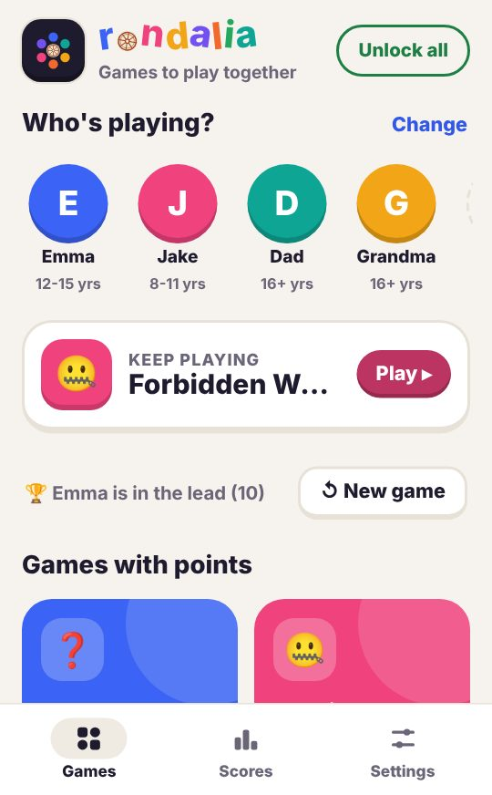
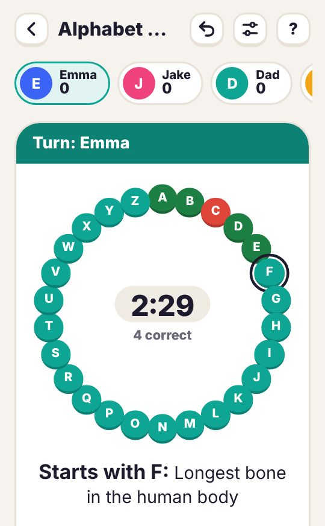
The games
In English, Spanish, French and German, with questions adapted to each country. Free to start; a single purchase unlocks everything, no subscriptions.
Lexpedition
Set your course for passing your exam
Lexpedition turns preparing for your official language exam into a voyage across the sea, and the destination port is a pass. Each lesson is an island to conquer and every expression you master is one mile closer to the goal. With five or ten minutes a day you will reach exam day with the vocabulary that resists the most.
Prepare English, German, French or Spanish, from A1 to C2 of the Common European Framework. You can study several at once.
Phrasal verbs, verbs with prepositions (trennbare Verben…), idioms and collocations, with real example sentences.
Choose your course among mystery islands, clear the fog and plant your flag. Rise from Deckhand to Admiral.
Flashcards, pick the particle, fill the gaps and match pairs, with spaced repetition so you don't forget.
Daily test with a score, streaks, XP goal, missions and badges. Perfect to build the habit.
The app speaks English, Spanish, French or German, and meanings can be shown as translations or definitions.
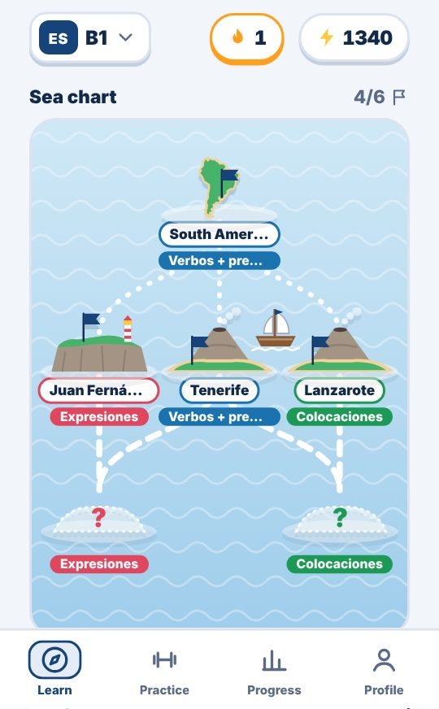
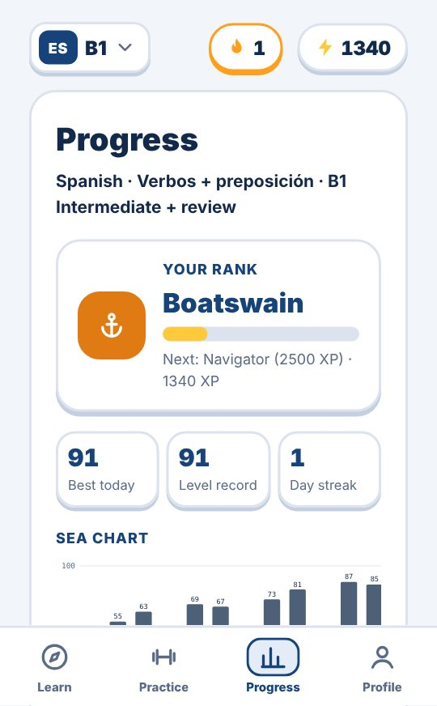
For every age: from children preparing their first certificate to adults. Several profiles on the same device. Free at every level: the Daily test and the first 3 islands of each level; each full language is unlocked with a one-time purchase.
Our promise
- No ads, ever.
- No accounts or sign-up.
- We don't collect personal data: everything stays on your device.
- Child-friendly: purchases and links are protected by a question for adults.
- Optional one-time purchase, no subscriptions.
Questions or ideas? Write to soporte@mjcstudio.com
Des applis pour apprendre et jouer en famille
Nous sommes MJCStudio, un petit studio indépendant d'Espagne. Nous créons des applis soignées, sans publicité et sans collecte de données, pour passer de bons moments ensemble et apprendre sans s'en rendre compte.
Rondalia
Des moments de qualité qui tiennent dans un téléphone
Tous les moments sont bons pour jouer ensemble : après le repas, en voiture, en attendant au restaurant, un après-midi de pluie ou entre amis. Sors ton téléphone et la partie commence. Un seul téléphone qui passe de main en main, sans internet, sans compte et sans règles à lire : grands-parents, parents et enfants jouent ensemble, chacun à son niveau.
Quatre tranches d'âge (5–7, 8–11, 12–15 et 16+). Dans la même partie, le petit a sa question et le grand-père la sienne.
Du quiz et du mime à la roue de l'alphabet, aux drapeaux ou aux mots interdits. Il y en a toujours un qui fait envie.
Plus de 2 000 questions par langue, des centaines de mots et de mimes, tout vérifié pour convenir aux enfants.
Quiz, Roue de l'alphabet, Calcul mental, Drapeaux et Devine le nombre permettent de s'entraîner et d'apprendre en solo.
L'appli compte les points, les tours et le temps : vous n'avez plus qu'à rire.
Un pack Halloween gratuit : questions, mots et mimes, et un style visuel avec chaudrons de sorcière, chauves-souris et toiles d'araignée.
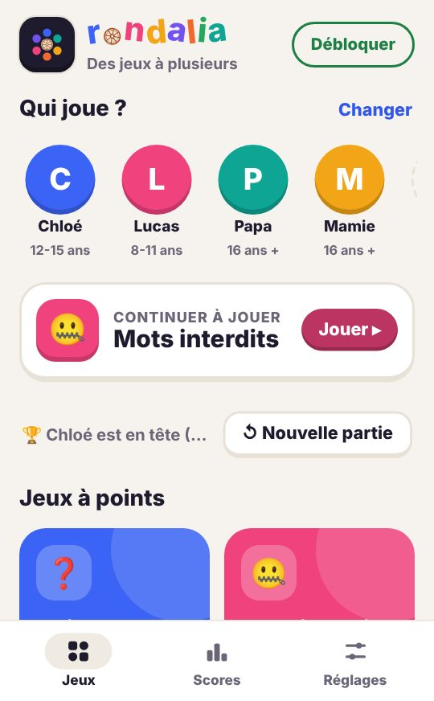
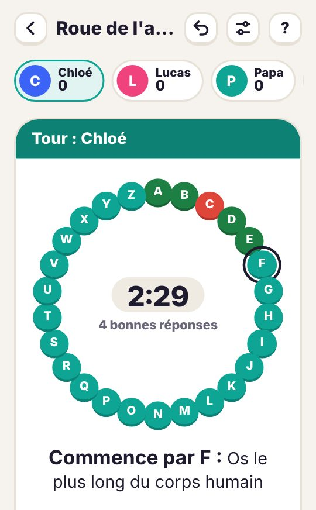
Les jeux
En français, espagnol, anglais et allemand, avec des questions adaptées à chaque pays. Gratuit pour commencer ; un achat unique débloque tout, sans abonnement.
Lexpedition
Cap sur la réussite de ton examen
Lexpedition transforme la préparation de ton examen officiel de langue en une traversée en mer, et le port d'arrivée, c'est la réussite. Chaque leçon est une île à conquérir et chaque expression maîtrisée est un mille de moins vers le but. Avec cinq ou dix minutes par jour, tu arriveras à l'examen avec le vocabulaire qui résiste le plus.
Prépare l'anglais, l'allemand, le français ou l'espagnol, du niveau A1 au C2 du Cadre européen commun. Tu peux en étudier plusieurs.
Verbes à particule ou à préposition (phrasal verbs, trennbare Verben…), expressions idiomatiques et collocations, avec de vraies phrases d'exemple.
Choisis ton cap parmi des îles mystérieuses, dissipe le brouillard et plante ton drapeau. Grimpe de Mousse à Amiral.
Cartes, choix de la particule, textes à trous et paires, avec répétition espacée pour ne pas oublier.
Test du jour noté, série, objectif d'XP, missions et badges. Idéal pour prendre l'habitude.
L'appli parle français, espagnol, anglais ou allemand, et les sens s'affichent en traduction ou en définition.
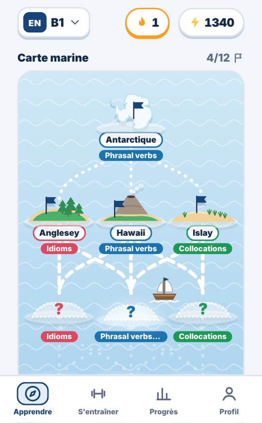
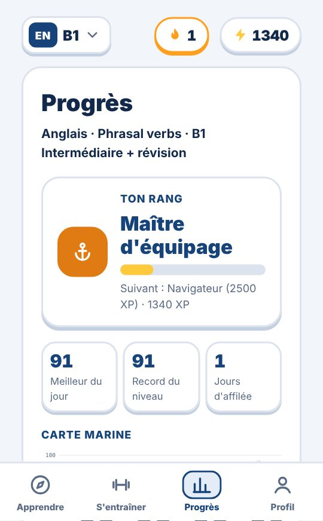
Pour tous les âges : des enfants qui préparent leur premier diplôme aux adultes. Plusieurs profils sur le même appareil. Gratuit à chaque niveau : le Test du jour et les 3 premières îles de chaque niveau ; chaque langue complète se débloque par un achat unique.
Notre engagement
- Pas de publicité, jamais.
- Pas de compte ni d'inscription.
- Aucune donnée personnelle collectée : tout reste sur ton appareil.
- Adapté aux enfants : achats et liens protégés par une question pour adultes.
- Achat unique facultatif, sans abonnement.
Une question, une idée ? Écris-nous à soporte@mjcstudio.com
Apps zum Lernen und gemeinsamen Spielen
Wir sind MJCStudio, ein kleines unabhängiges Studio aus Spanien. Wir machen liebevoll gestaltete Apps ohne Werbung und ohne Datensammlung – für schöne Stunden miteinander und Lernen ganz nebenbei.
Rondalia
Wertvolle gemeinsame Momente, die in ein Handy passen
Jeder Moment ist gut, um gemeinsam zu spielen: nach dem Essen, auf der Autofahrt, beim Warten im Restaurant, an einem Regennachmittag oder mit Freunden. Handy raus – und los geht's. Ein Handy, das herumgereicht wird, ohne Internet, ohne Konto und ohne Anleitung lesen: Großeltern, Eltern und Kinder spielen zusammen, jeder auf seinem Niveau.
Vier Altersgruppen (5–7, 8–11, 12–15 und 16+). Im selben Spiel bekommt das Kind seine Frage und der Opa seine.
Von Quiz und Pantomime bis Buchstabenrad, Flaggen oder verbotene Wörter. Irgendeins passt immer.
Über 2.000 Fragen pro Sprache, Hunderte Wörter und Pantomimen – alles kindgerecht geprüft.
Quiz, Buchstabenrad, Kopfrechnen, Flaggen und Zahlenraten eignen sich zum Üben und Lernen mit nur einem Spieler.
Die App zählt Punkte, Runden und Zeit – ihr müsst nur noch lachen.
Ein kostenloses Halloween-Paket: Fragen, Wörter und Pantomimen, dazu ein Stil mit Hexenkesseln, Fledermäusen und Spinnweben.
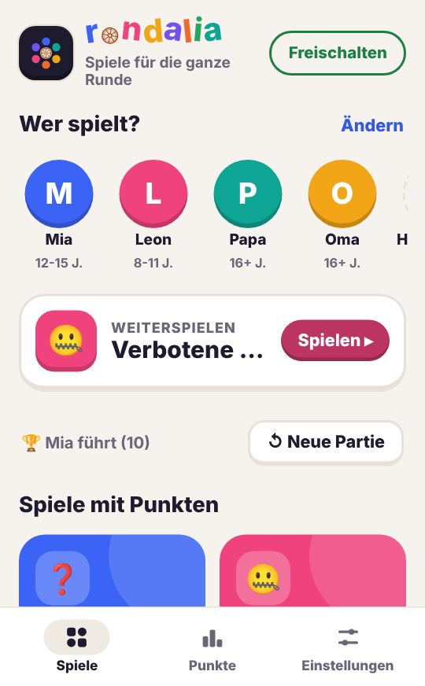
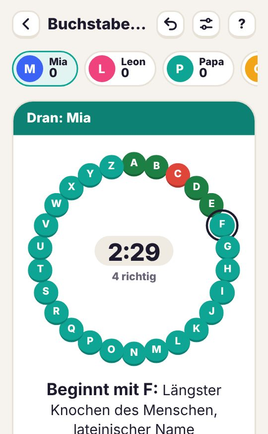
Die Spiele
Auf Deutsch, Spanisch, Englisch und Französisch, mit Fragen für jedes Land. Kostenlos starten; ein einziger Kauf schaltet alles frei, ohne Abo.
Lexpedition
Kurs auf deine bestandene Prüfung
Lexpedition macht aus der Vorbereitung auf deine offizielle Sprachprüfung eine Reise übers Meer – und der Zielhafen ist das Bestehen. Jede Lektion ist eine Insel, die du eroberst, und jeder Ausdruck, den du beherrschst, ist eine Seemeile näher am Ziel. Mit fünf bis zehn Minuten am Tag gehst du mit genau dem Wortschatz in die Prüfung, der am schwersten fällt.
Bereite dich auf Englisch, Deutsch, Französisch oder Spanisch vor, von A1 bis C2 des Gemeinsamen Europäischen Referenzrahmens. Auch mehrere gleichzeitig.
Partikelverben und Verben mit Präposition (phrasal verbs, trennbare Verben…), Redewendungen und Kollokationen, mit echten Beispielsätzen.
Wähle deinen Kurs zwischen geheimnisvollen Inseln, vertreibe den Nebel und hisse deine Flagge. Steige vom Schiffsjungen zum Admiral auf.
Karteikarten, Partikel wählen, Lücken füllen und Paare bilden – mit verteilter Wiederholung, damit nichts vergessen wird.
Tagestest mit Note, Serie, XP-Ziel, Missionen und Abzeichen. Ideal, um dranzubleiben.
Die App spricht Deutsch, Spanisch, Englisch oder Französisch, und Bedeutungen erscheinen als Übersetzung oder Definition.
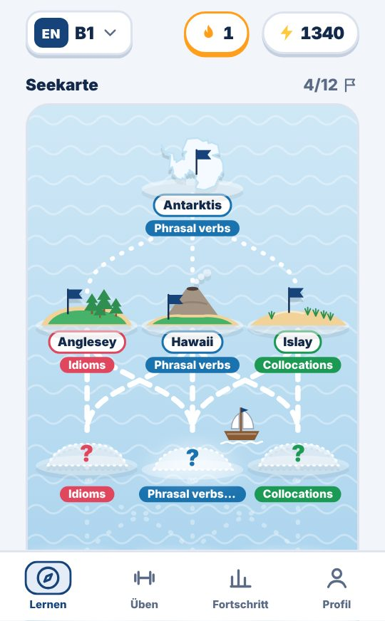
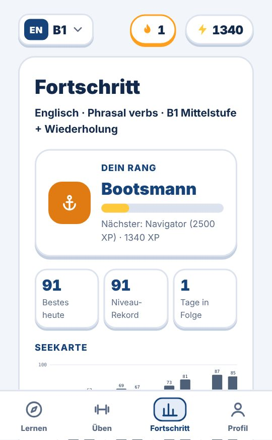
Für jedes Alter: von Kindern vor ihrem ersten Zertifikat bis zu Erwachsenen. Mehrere Profile auf einem Gerät. Kostenlos auf jedem Niveau: der Tagestest und die ersten 3 Inseln jedes Niveaus; jede Sprache wird mit einem Einmalkauf komplett freigeschaltet.
Unser Versprechen
- Keine Werbung, niemals.
- Kein Konto, keine Anmeldung.
- Wir sammeln keine personenbezogenen Daten: Alles bleibt auf deinem Gerät.
- Kindgerecht: Käufe und Links sind durch eine Frage für Erwachsene geschützt.
- Optionaler Einmalkauf, kein Abo.
Fragen oder Ideen? Schreib uns an soporte@mjcstudio.com